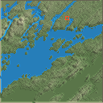
Near Thousand Islands Saint Lawrence, 60 m per tile
archipelago · 128² · normalised
44.3500, -76.0100
Advisories: start.reach, plants.drought, water.reservoir
Fixture JSON.gz88 test fixtures. Blue is simulated water. Red marks the start. North is up. These are tuning references, never generator templates. Terrain Tiles attribution.

archipelago · 128² · normalised
44.3500, -76.0100
Advisories: start.reach, plants.drought, water.reservoir
Fixture JSON.gz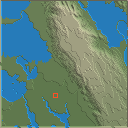
badlands · 128² · normalised
43.7500, -102.4153
Advisories: plants.drought
Fixture JSON.gz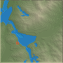
braided · 128² · normalised
63.4760, -150.1811
Advisories: plants.drought
Fixture JSON.gz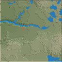
caldera · 128² · normalised
42.8860, -122.1837
Advisories: plants.drought
Fixture JSON.gz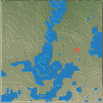
canyon · 128² · normalised
-15.6640, -72.0460
Advisories: plants.drought
Fixture JSON.gz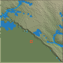
coast · 128² · compressed
-38.6600, 143.1000
Advisories: plants.drought, water.reservoir
Fixture JSON.gz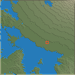
cone · 128² · normalised
13.1960, 123.6346
Advisories: plants.drought
Fixture JSON.gz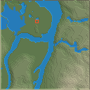
confluence · 128² · normalised
50.3600, 7.6000
Advisories: plants.drought
Fixture JSON.gz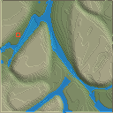
delta · 128² · normalised
72.2960, 126.5220
Advisories: start.reach, plants.drought
Fixture JSON.gz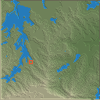
escarpment · 128² · normalised
-28.6960, 28.9000
Advisories: plants.drought
Fixture JSON.gz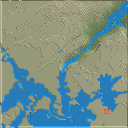
falls · 128² · normalised
5.1800, -59.4800
Advisories: plants.drought, water.reservoir
Fixture JSON.gz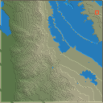
fan · 128² · normalised
36.2200, -116.7031
Advisories: start.reach, plants.drought
Fixture JSON.gz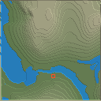
fjord · 128² · normalised
62.0460, 6.9847
Advisories: start.reach, plants.drought
Fixture JSON.gz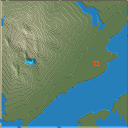
glacial · 128² · normalised
-50.9900, -72.9243
Advisories: plants.drought
Fixture JSON.gz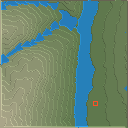
gorge · 128² · normalised
27.1260, 100.0493
Advisories: plants.drought
Fixture JSON.gz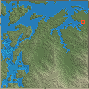
karst · 128² · normalised
17.5600, 106.3266
Advisories: plants.drought
Fixture JSON.gz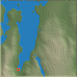
lakes · 128² · normalised
54.5700, -3.1300
Advisories: plants.drought
Fixture JSON.gz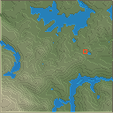
meander · 128² · normalised
43.3060, 19.8758
Advisories: plants.drought
Fixture JSON.gz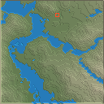
mesa · 128² · normalised
5.0860, -60.8142
Advisories: plants.drought
Fixture JSON.gz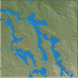
plateau · 128² · normalised
11.8500, 38.1551
Advisories: plants.drought
Fixture JSON.gz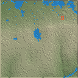
random · 128² · normalised
-17.5574, 25.8681
Advisories: start.reach, plants.drought
Fixture JSON.gz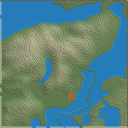
archipelago · 128² · compressed
68.2100, 13.6200
Advisories: plants.drought
Fixture JSON.gz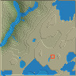
badlands · 96² · normalised
51.4700, -112.6334
Advisories: plants.drought
Fixture JSON.gz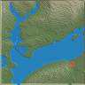
braided · 96² · normalised
46.2140, 12.9800
Advisories: start.reach, plants.drought
Fixture JSON.gz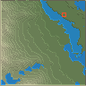
caldera · 96² · normalised
32.8460, 130.9957
Advisories: plants.drought
Fixture JSON.gz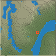
canyon · 96² · normalised
-24.5160, 30.7900
Advisories: start.reach, plants.drought
Fixture JSON.gz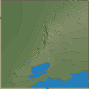
coast · 128² · linear
52.9700, -9.4300
Advisories: start.reach, plants.drought, water.reservoir
Fixture JSON.gz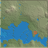
cone · 96² · normalised
19.5440, -102.2500
Advisories: start.reach, plants.drought
Fixture JSON.gz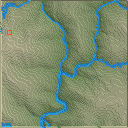
confluence · 128² · compressed
30.1500, 78.6000
Advisories: start.reach, plants.drought, water.reservoir
Fixture JSON.gz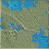
delta · 96² · normalised
45.1900, 29.3500
Advisories: plants.drought
Fixture JSON.gz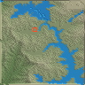
escarpment · 96² · normalised
17.8760, 73.6033
Advisories: plants.drought
Fixture JSON.gz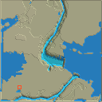
falls · 128² · compressed
43.0800, -79.0700
Advisories: plants.drought
Fixture JSON.gz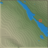
fan · 96² · normalised
40.3660, -105.7009
Advisories: start.reach, plants.drought
Fixture JSON.gz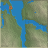
fjord · 96² · normalised
-45.4000, -73.3000
Advisories: start.reach, plants.drought
Fixture JSON.gz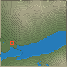
glacial · 96² · normalised
56.6700, -5.0400
Advisories: start.reach, plants.drought
Fixture JSON.gz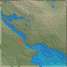
gorge · 96² · normalised
43.8140, 6.3600
Advisories: plants.drought
Fixture JSON.gz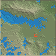
karst · 96² · normalised
9.8200, 124.2048
Advisories: plants.drought
Fixture JSON.gz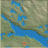
lakes · 96² · normalised
61.8740, 28.5000
Advisories: start.reach, plants.drought
Fixture JSON.gz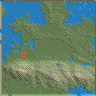
meander · 96² · normalised
5.4360, 118.2458
Advisories: plants.drought
Fixture JSON.gz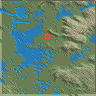
mesa · 96² · normalised
17.1640, 21.8000
Advisories: plants.drought
Fixture JSON.gz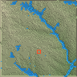
plateau · 96² · normalised
18.0540, 75.0000
Advisories: plants.drought
Fixture JSON.gz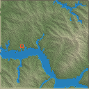
random · 128² · normalised
28.0833, 111.0416
Advisories: start.reach, plants.drought
Fixture JSON.gz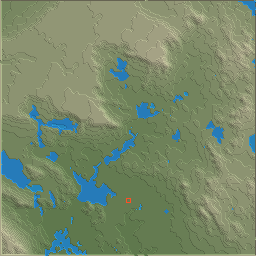
badlands · 256² · normalised
42.2540, -1.4800
Advisories: plants.drought
Fixture JSON.gz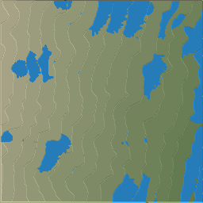
braided · 256² · normalised
-43.3800, 172.2700
Advisories: plants.drought, water.reservoir
Fixture JSON.gz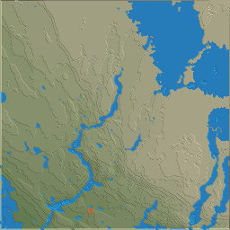
caldera · 256² · normalised
2.5660, 98.7960
Advisories: plants.drought
Fixture JSON.gz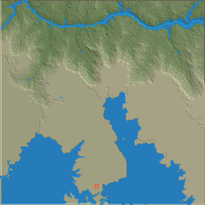
canyon · 256² · normalised
36.0460, -112.1668
Advisories: plants.drought
Fixture JSON.gz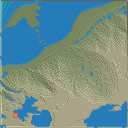
coast · 128² · compressed
22.1700, -159.6500
Advisories: start.reach, plants.drought, water.reservoir
Fixture JSON.gz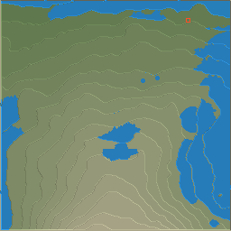
cone · 256² · normalised
37.8040, 15.0000
Advisories: plants.drought
Fixture JSON.gz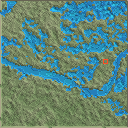
delta · 128² · normalised
16.6100, 82.1800
Advisories: start.reach, plants.drought
Fixture JSON.gz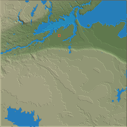
escarpment · 256² · normalised
43.2300, -79.9100
Advisories: plants.drought
Fixture JSON.gzfalls · 128² · compressed
64.3300, -20.1200
Advisories: plants.drought
Fixture JSON.gzfan · 256² · normalised
37.4900, 84.1180
Advisories: plants.drought, water.reservoir
Fixture JSON.gzfjord · 256² · normalised
-44.6200, 167.8900
Advisories: start.reach
Fixture JSON.gzglacial · 256² · normalised
46.6240, 7.9100
Advisories: plants.drought
Fixture JSON.gzgorge · 256² · normalised
-14.3200, 132.4757
Advisories: plants.drought
Fixture JSON.gzkarst · 256² · normalised
44.9340, 15.6100
Advisories: water.reservoir
Fixture JSON.gzmeander · 256² · normalised
33.4140, -91.1300
Advisories: plants.drought
Fixture JSON.gzmesa · 256² · normalised
-17.5040, 128.3434
Advisories: plants.drought
Fixture JSON.gzplateau · 256² · normalised
31.9460, 89.9364
Advisories: plants.drought
Fixture JSON.gzrandom · 128² · normalised
-44.0594, 170.9312
Advisories: start.reach, plants.drought
Fixture JSON.gzbadlands · 128² · normalised
35.0400, -109.7241
Advisories: plants.drought
Fixture JSON.gzbraided · 128² · normalised
63.9200, -17.0700
Advisories: start.reach, plants.drought
Fixture JSON.gzcaldera · 256² · normalised
-3.2340, 35.5160
Advisories: plants.drought, water.reservoir
Fixture JSON.gzcanyon · 128² · normalised
-27.5900, 17.6509
Advisories: plants.drought
Fixture JSON.gzcone · 128² · normalised
35.3600, 138.7962
Advisories: plants.drought, water.reservoir
Fixture JSON.gzescarpment · 128² · normalised
-33.7500, 150.3100
Advisories: plants.drought
Fixture JSON.gzfalls · 128² · linear
-17.9300, 25.8600
Advisories: plants.drought
Fixture JSON.gzfan · 128² · normalised
-23.7540, -69.2589
Advisories: start.reach, plants.drought
Fixture JSON.gzfjord · 128² · normalised
59.8860, -149.8277
Advisories: start.reach, plants.drought
Fixture JSON.gzglacial · 128² · normalised
-43.7740, 170.0253
Advisories: start.reach, plants.drought
Fixture JSON.gzgorge · 128² · normalised
31.6440, -5.6000
Advisories: plants.drought
Fixture JSON.gzkarst · 128² · normalised
24.9300, 110.5595
Advisories: plants.drought
Fixture JSON.gzmeander · 128² · normalised
37.1700, -109.8623
Advisories: start.reach, plants.drought
Fixture JSON.gzmesa · 128² · normalised
36.9360, -110.1676
Advisories: plants.drought
Fixture JSON.gzplateau · 128² · normalised
38.4500, -110.2000
Advisories: start.reach, plants.drought
Fixture JSON.gzbraided · 128² · compressed
26.9600, 94.2305
Advisories: start.reach, plants.drought
Fixture JSON.gzcaldera · 96² · normalised
37.8600, -25.7800
Advisories: start.reach, plants.drought
Fixture JSON.gzcanyon · 96² · normalised
27.5640, -107.8300
Advisories: start.reach, plants.drought
Fixture JSON.gzcone · 256² · normalised
-39.3000, 174.0600
Advisories: water.reservoir
Fixture JSON.gzescarpment · 96² · normalised
14.3300, -3.4100
Advisories: start.reach, plants.drought
Fixture JSON.gzfalls · 128² · linear
-25.6900, -54.4400
Advisories: plants.drought, water.reservoir
Fixture JSON.gzfjord · 96² · normalised
69.1060, -51.0517
Advisories: start.reach, plants.drought, water.reservoir
Fixture JSON.gzglacial · 96² · normalised
37.7400, -119.5218
Advisories: start.reach, plants.drought
Fixture JSON.gzgorge · 96² · normalised
43.2040, 19.3000
Advisories: plants.drought
Fixture JSON.gzkarst · 96² · normalised
-18.9500, 44.8000
Advisories: plants.drought
Fixture JSON.gzmeander · 96² · normalised
-14.5060, -64.9300
Advisories: start.reach, plants.drought
Fixture JSON.gzmesa · 96² · normalised
38.2800, -111.2500
Advisories: start.reach, plants.drought
Fixture JSON.gzplateau · 96² · normalised
-18.5000, -68.4431
Advisories: start.reach, plants.drought
Fixture JSON.gz